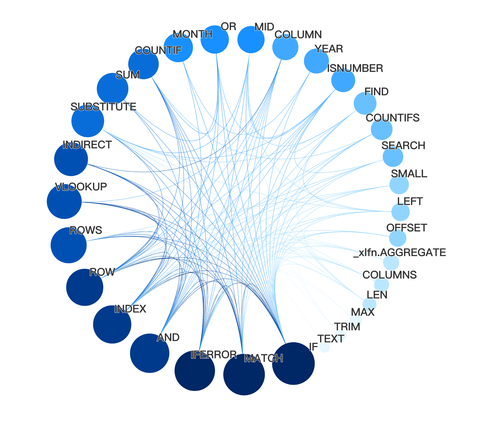
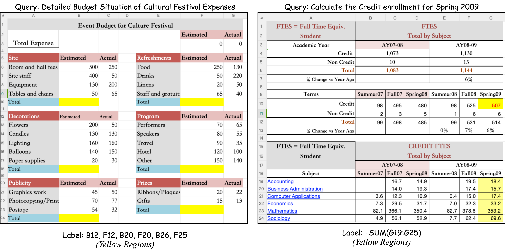
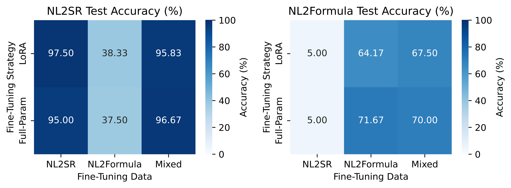

Spreadsheets are everywhere, but AI struggles to understand their complex mix of data and formulas. We introduce Sheetpedia, a new, massive corpus of over 290,000 real-world spreadsheets designed to tackle this challenge. To demonstrate its power, we created two new tasks—translating natural language to cell ranges (NL2SR) and formulas (NL2Formula)—and fine-tuned models on our dataset to achieve state-of-the-art results, reaching 97.5% and 71.7% accuracy, respectively. Sheetpedia fills a crucial gap, paving the way for smarter, more intuitive spreadsheet tools.
A Glimpse into the Corpus


Putting Sheetpedia to the Test

